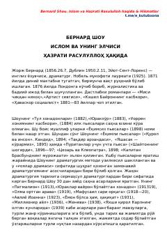

IVBernard Shouning Islom dini va hayotiy hikmatlari jamlangan asar.
Ushbu kitob mashhur ingliz yozuvchisi va dramaturgi Bernard Shouning Islom dini va Muhammad (s.a.v.) payg'ambar haqidagi qarashlari hamda turli hayotiy mavzulardagi hikmatli so'zlarini o'z ichiga oladi. Muallif Islom dinining insoniyat taraqqiyotidagi o'rni va uning kelajakdagi ahamiyati haqida o'zining ijobiy fikrlarini bayon etadi.